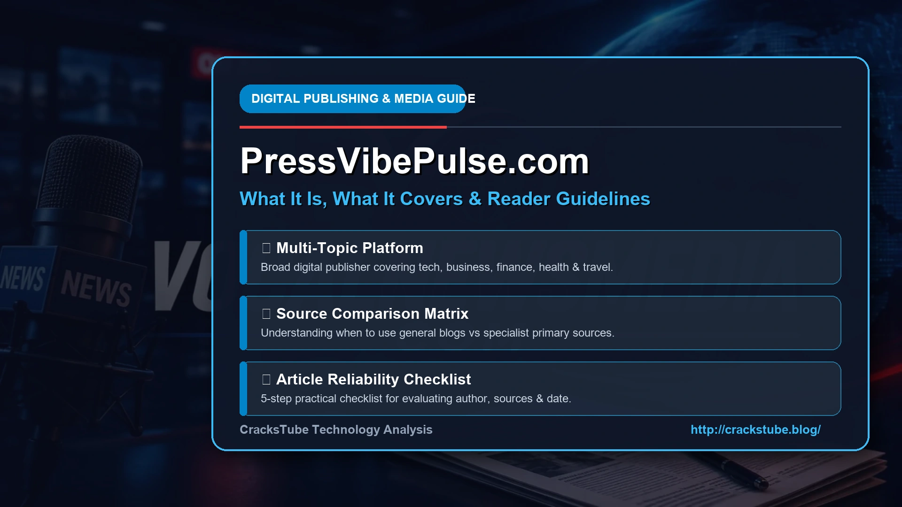
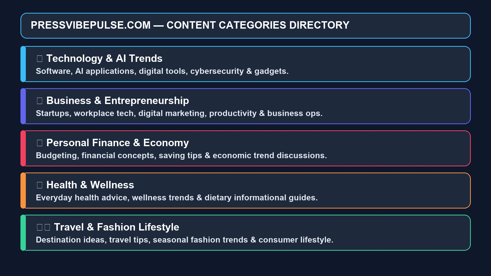
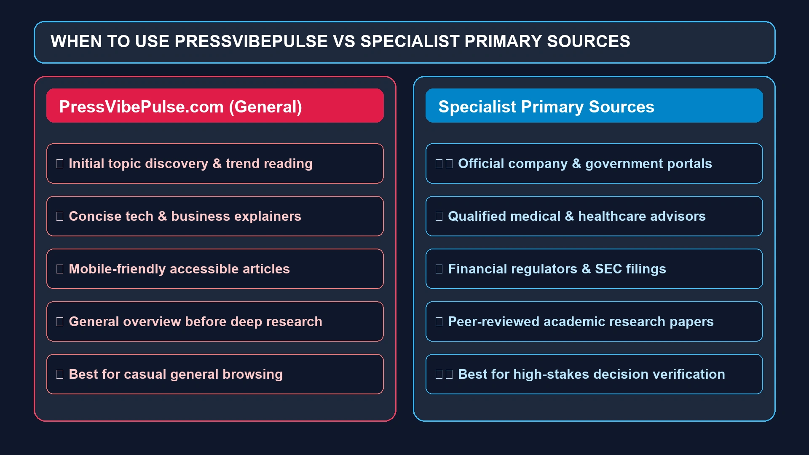
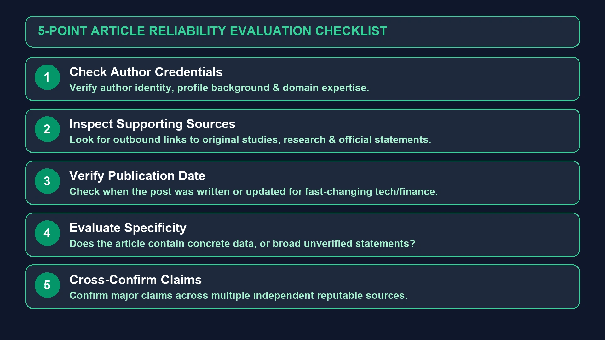

PressVibePulse Com: What It Is, What It Covers, and What Readers Should Know
When a website name starts appearing repeatedly in search results, it is natural to wonder what is actually behind it. PressVibePulse Com is one such name.

When a website name starts appearing repeatedly in search results, it is natural to wonder what is actually behind it. PressVibePulse Com is one such name. People searching for it may be looking for a quick explanation of the platform, the type of content it publishes, whether it is a news website, and whether its articles are suitable for research or everyday reading.
The simplest description is that PressVibePulse Com is a broad digital publishing and information platform covering multiple subjects rather than a narrowly focused publication. Available descriptions of the site consistently associate it with areas such as technology, business, health, finance, travel, lifestyle, fashion, and digital trends.
That broad approach is useful for readers who like discovering different subjects in one place. At the same time, it creates an important question: should every article published there be treated as authoritative? Not necessarily. As with any general-interest website, the quality, sourcing, author expertise, and publication date of an individual article matter.
This guide takes a practical look at PressVibePulse Com, including its content categories, audience, reading experience, potential advantages, limitations, credibility considerations, and how to use the platform responsibly.
What Is PressVibePulse Com?
PressVibePulse Com refers to the PressVibePulse digital publishing brand and its associated online presence.
Based on available descriptions and current search results, the platform follows a multi-topic content model. Rather than concentrating exclusively on politics, technology, entertainment, or another single subject, it publishes information across several categories.
Commonly associated topics include:
- Technology and digital trends
- Business and entrepreneurship
- Finance
- Health and wellness
- Travel
- Lifestyle
- Fashion
- Entertainment
- Social and internet trends
Several independent descriptions characterize PressVibePulse as a general-interest or multi-category content website rather than a specialist publication.
This distinction matters because the best way to use a general content platform is different from the way you would use a specialist journal, government website, or established news wire.
Why Are People Searching for PressVibePulse Com?
The keyword PressVibePulse Com can represent several different search intentions.
Someone might have:
- Seen the name in a Google result
- Encountered a PressVibePulse article through social media
- Received a link from another website
- Wanted to know whether the site is legitimate
- Wanted to understand what topics it covers
- Been looking for a particular article
- Wondered whether it is a news website or a general blog
This means a useful PressVibePulse guide needs to answer more than just "what is it?"
It should also explain what readers can expect, how the content should be evaluated, and when another source would be more appropriate.
What Type of Content Does PressVibePulse Publish?
One of the defining characteristics of PressVibePulse is its broad subject coverage.
Technology
Technology is one of the recurring areas associated with PressVibePulse.
Articles in this space can cover topics involving:
- Artificial intelligence
- Software
- Digital tools
- Online platforms
- Gadgets
- Cybersecurity
- Digital transformation
- Emerging technologies
This type of content can be useful when someone wants a straightforward introduction to a technology topic without immediately diving into highly technical documentation.
For specifications, however, the manufacturer's documentation or official product page should remain the primary source.

Business and Entrepreneurship
Business content can appeal to:
- Entrepreneurs
- Startup founders
- Small-business owners
- Freelancers
- Digital professionals
- General readers interested in business trends
Potential subjects include entrepreneurship, online businesses, workplace technology, digital marketing, productivity, and changes affecting modern companies.
The broad nature of the category means readers should distinguish between general business commentary and information requiring professional or financial expertise.
Finance
Finance is an area where source quality matters particularly strongly.
General articles about budgeting, saving, financial concepts, or economic trends can be useful for learning.
But information involving investments, taxes, loans, securities, or major financial decisions deserves additional verification through regulators, financial institutions, official filings, or qualified professionals.
Health and Wellness
Health-related content can help readers discover basic information about wellness and everyday health topics.
However, a general-interest website should not replace:
- A doctor
- A qualified healthcare professional
- Medical guidelines
- Government health agencies
- Peer-reviewed research
This is especially important when an article makes claims about treatments, medications, symptoms, or serious medical conditions.
Travel
Travel content can be useful for destination inspiration, planning ideas, packing tips, and general travel information.
But travel rules change.
Visa requirements, airline policies, border restrictions, prices, and entry requirements should always be checked against official sources before a trip.
Lifestyle
Lifestyle is naturally one of the broadest categories.
It can include:
- Everyday habits
- Productivity
- Relationships
- Home-related topics
- Personal interests
- Wellness
- Consumer trends
- Entertainment
This makes the category particularly suitable for casual browsing.
Fashion
Fashion content can cover trends, clothing ideas, styling, seasonal changes, and consumer interests.
Readers can use these articles for inspiration, while remembering that trends move quickly and product information can become outdated.
Is PressVibePulse Com a News Website?
This is where terminology matters.
The word "Press" in the brand name may make people assume that PressVibePulse operates like a traditional newsroom.
Available descriptions, however, more consistently portray it as a multi-topic digital content platform.
That is not necessarily a negative.
There is a legitimate place online for general-interest publishers that explain trends, introduce subjects, and provide accessible articles.
But readers should not automatically assume that every article has gone through the same reporting, editorial review, fact-checking, and source-verification process associated with major news organizations.
A better question than "Is it a news website?" is:
"What evidence supports this particular article?"
That question remains useful regardless of the publisher.
PressVibePulse Com Content Style
Available reviews generally describe the platform's content as relatively accessible and easy to scan.
Common characteristics include:
- Short paragraphs
- Straightforward language
- Clear headings
- General-interest explanations
- Short-to-medium-length articles
- Broad subject coverage
One independent review specifically describes the platform as being aimed at casual readers, students, and beginners who want accessible information rather than specialist-level material.
That positioning makes sense for a general information site.
Not every reader wants a 3,000-word technical report when they simply want to understand a topic in five minutes.
Who Is PressVibePulse Com For?
The broad content strategy means the potential audience is also broad.
Casual Readers
People who enjoy discovering interesting subjects without following one particular niche may find the format convenient.
Students
Students can use general-interest articles as introductory material when learning about an unfamiliar subject.
However, academic assignments should rely on primary research, academic journals, institutional sources, and other appropriate references.
Technology Enthusiasts
Readers interested in AI, software, digital tools, cybersecurity, and technology trends may find relevant articles.
Entrepreneurs
Business and technology content can provide ideas and general awareness about changes in the digital economy.
Digital Marketers and Creators
Articles about social platforms, digital trends, online tools, and content can be useful for discovering topics worth researching further.
General News and Trend Readers
People who simply want to know what topics are receiving attention online may appreciate the multi-category format.
Is PressVibePulse Com Easy to Use?
The platform's content model is designed around relatively straightforward online reading.
A reader typically discovers an article through a search engine, referral, or shared link and then moves through the article using headings and short sections.
A simple structure has an underrated benefit: it reduces the amount of effort required to find the information you actually want.
That is particularly useful on mobile devices, where large blocks of text can become difficult to navigate.
Several independent descriptions also characterize PressVibePulse as having a clean, mobile-oriented reading experience.
Is PressVibePulse Com Free to Read?
Available reviews describe the platform as openly accessible, without a subscription requirement for ordinary article reading.
That makes it convenient for casual readers who want to access information without creating an account first.
Still, website policies and access models can change, so readers should check the current site if access conditions are important to them.
Is PressVibePulse Com Legit?
"Legitimate" can mean different things.
If the question is whether PressVibePulse Com represents a functioning online publishing platform, available evidence supports that characterization. Multiple current third-party pages describe it as an active multi-topic content website.
But legitimacy and authority are not the same thing.
A website can be legitimate while still not being the strongest source for a particular claim.
For example:
General technology explainer: potentially useful.
Investment recommendation: requires stronger verification.
Medical treatment advice: requires authoritative medical sources.
Breaking news: should be compared with established reporting and primary statements.
That distinction provides a much more useful answer than simply labeling an entire website "safe" or "unsafe."
How Reliable Is PressVibePulse Com?
The most reasonable approach is to evaluate the individual article rather than assigning one reliability score to the entire domain.
Look at five things:
1. Author
Is the author identified?
Does the author have relevant experience?
Is there a meaningful author profile?
2. Sources
Does the article link to original sources?
Are claims supported by evidence?
Are official documents or research referenced?
3. Date
When was the article published?
When was it last updated?
This is particularly important for technology, finance, health, travel, and current events.
4. Specificity
Does the article provide actual information, examples, data, and explanations?
Or does it make broad statements without evidence?
5. Independent Confirmation
Can the important claim be confirmed elsewhere?
This final check is often the most valuable.
PressVibePulse Com for General Information
For general information, a multi-topic website can serve as a useful starting point.
Imagine you encounter a term you've never heard before.
You could read a short explainer to understand:
- What the term means
- Why it matters
- What related concepts exist
- Which questions you should investigate next
You can then move to more authoritative sources.
This "discovery → verification → deeper research" model is much safer than treating one article as the final word.

When Should You Use Another Source?
There are several situations where PressVibePulse—or any general-interest blog—should not be your only source.
Medical Questions
Verify information with qualified healthcare professionals and authoritative medical organizations.
Financial Decisions
Use regulators, financial institutions, official filings, and qualified advisors.
Legal Information
Consult official government resources or qualified legal professionals.
Academic Research
Use peer-reviewed research, books, academic databases, and institutional publications.
Breaking News
Compare multiple established news organizations and, where possible, find the original statement or document.
Product Specifications
Check the manufacturer's official documentation.
This isn't a criticism of PressVibePulse specifically.
It is simply good information practice.
PressVibePulse Com and Semantic Content
From an SEO and content perspective, the site's broad topic model is also interesting.
A website covering technology, finance, lifestyle, health, travel, and business can potentially build separate topical clusters around each subject.
For example, a technology cluster might include:
Artificial intelligence → AI tools → automation → cybersecurity → software → digital transformation
A travel cluster might connect:
Travel planning → destinations → transportation → accommodation → travel technology
This type of topical relationship helps readers discover related information and gives search engines additional context about the subjects covered.
However, semantic relevance should not be confused with expertise.
Having many related keywords on a page does not automatically make the information accurate.
What Are the Advantages of PressVibePulse Com?
Broad Topic Selection
One of its clearest advantages is variety. Readers can explore multiple subjects without visiting several separate blogs.
Accessible Writing
The platform is generally described as using straightforward language suitable for casual readers and beginners.
Easy Content Discovery
The broad publishing model means readers can encounter subjects they were not specifically searching for.
Mobile-Friendly Reading
Independent descriptions emphasize a simple reading experience suitable for mobile users.
Useful for Initial Research
A concise article can provide enough background to help a reader decide what to research next.
What Are the Limitations of PressVibePulse Com?
The platform's strengths also create some limitations.
Limited Specialization
A website covering numerous unrelated categories cannot reasonably provide expert-level depth on every subject.
Source Quality Can Matter
Readers should inspect citations and supporting evidence, particularly for sensitive topics.
Author Expertise May Not Always Be Clear
Some independent reviews have identified limited author-credential transparency as an area worth considering.
Not a Substitute for Primary Sources
For important decisions, readers should go beyond a general-interest article.
Content Can Become Outdated
This is particularly relevant to technology, travel, finance, and current events.
PressVibePulse Com vs. Specialist Websites
It is helpful to think of websites as serving different jobs.
| Source Type | Best Use |
|---|---|
| PressVibePulse-style general publisher | Discovery and general reading |
| Specialist publication | Deep subject knowledge |
| Government website | Official rules and regulations |
| Academic journal | Scientific and scholarly research |
| Manufacturer website | Product specifications |
| Major news organization | Reported current events |
| Primary document | Direct verification |
There is no reason a general-interest website needs to win every category.
Its value can simply be that it makes information easier to discover and understand.
How to Read PressVibePulse Com More Effectively
You can get more value from the platform by treating each article as part of a larger research process.
Start With the Main Question
Before reading, identify what you actually want to know.
Check the Publication Date
Don't rely on an old article for rapidly changing information.
Look for Supporting Evidence
Pay attention to sources and links.
Follow the Original Source
If the article references a company announcement, study, government policy, or official statement, go to the original document when possible.
Compare Important Claims
If something could affect your money, health, legal position, or safety, verify it independently.
This takes only a few extra minutes and significantly improves the quality of your research.
Is PressVibePulse Com Good for SEO and Content Discovery?
If you're looking at PressVibePulse from a digital publishing perspective, its broad structure demonstrates several familiar content-marketing principles.
Topic-based categories allow a publisher to target different search intents.
For example:
- "What is artificial intelligence?" → informational intent
- "Best productivity tools" → commercial investigation
- "How does digital transformation work?" → educational intent
- "Travel technology trends" → trend discovery
A publisher can then connect related articles through internal links and build topical clusters.
That is a sensible content architecture.
But again, SEO structure does not replace content quality.
A well-optimized article still needs accurate information, useful explanations, original value, and an appropriate level of expertise.

Is PressVibePulse Com Safe to Visit?
A distinction between technical safety and information reliability is important.
A website can be technically safe to browse while an article on it may still contain an error.
Likewise, a highly authoritative publication can occasionally publish incorrect information.
As a general precaution:
- Check the spelling of the domain.
- Avoid suspicious pop-ups.
- Don't download unknown files.
- Don't enter passwords unnecessarily.
- Don't provide payment information unless you understand why it is required.
- Keep your browser and security software updated.
- Be careful with links that redirect to unrelated domains.
These are sensible precautions for virtually any unfamiliar website.
Does PressVibePulse Com Have a Login?
Search results can create some confusion around the word "login."
One recent article examining PressVibePulse specifically reports that a navigation item labeled "Login" does not appear to function as a conventional member-login system; instead, it leads to a category of articles discussing sign-in procedures for other services.
That means someone searching for "PressVibePulse Com login" should first verify that they are actually trying to access PressVibePulse itself rather than looking for instructions related to another website.
Always check the exact domain before entering credentials.
PressVibePulse Com and Digital Media
The broader significance of platforms like PressVibePulse comes from the changing way people consume information.
People increasingly discover information through:
- Google Search
- Social media
- News feeds
- Mobile browsers
- Content recommendations
- Online communities
This means a reader may encounter a topic through a 600-word article before ever visiting an established publication.
That makes general digital publishers useful for discovery.
It also makes media literacy more important.
The ability to ask "Where did this information come from?" is becoming just as valuable as the ability to find information in the first place.
Frequently Asked Questions About PressVibePulse Com
PressVibePulse Com is associated with a multi-topic digital publishing platform covering areas such as technology, business, health, finance, travel, lifestyle, fashion, and digital trends.
It is better described as a broad digital content or publishing platform than automatically treating it as a conventional newspaper or news wire. Its content spans many general-interest categories.
Available evidence indicates that PressVibePulse is an active online publishing property. However, legitimacy does not mean every article is authoritative, so important claims should still be verified.
Available reviews describe its articles as openly accessible without a subscription requirement for ordinary reading.
Its associated content includes technology, business, finance, health, lifestyle, travel, fashion, entertainment, and digital trends.
It can be useful for introductory research and topic discovery. For academic, medical, legal, or financial research, use authoritative primary sources and specialist publications as well.
It can suit casual readers, students, technology enthusiasts, entrepreneurs, digital professionals, and people interested in general online trends.
The platform covers many subjects, but readers should not automatically assume specialist-level expertise on every topic. Check author credentials, citations, and original sources when expertise matters.
Its accessible, general-interest format can be useful for beginners who want an initial understanding of unfamiliar subjects.
It is better not to rely on any general-interest website as the sole source for high-stakes financial or medical decisions. Verify those claims through qualified professionals and authoritative sources.
The site follows a broad content model designed to appeal to readers with different interests rather than focusing on a single specialist niche.
Final Verdict on PressVibePulse Com
PressVibePulse Com is best understood as a broad digital content and publishing platform rather than a replacement for specialist or primary information sources.
Its biggest advantage is variety. A reader can move from technology and business to lifestyle, travel, health, finance, or digital trends without needing to visit a different website for every subject.
Its biggest limitation is the same thing: breadth is not specialization.
A general-interest article can be an excellent starting point, but it should not automatically be treated as the final authority—especially when the subject involves money, health, law, safety, or rapidly changing rules.
So if you found PressVibePulse Com through Google and are wondering whether it is worth reading, the practical answer is simple:
Yes, use it for discovery, general information, and accessible reading—but verify important claims before acting on them.
That balanced approach is more useful than either blindly trusting every article or dismissing an entire platform without looking at the evidence.
Enjoyed this Technology guide?
Explore more Tech articles or submit your own guest contribution on CracksTube.